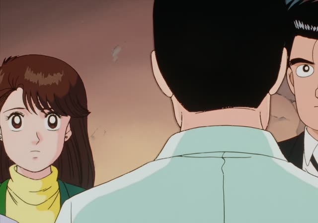
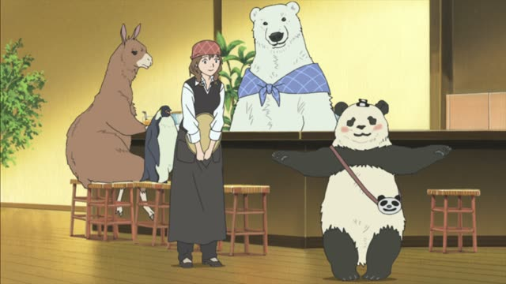
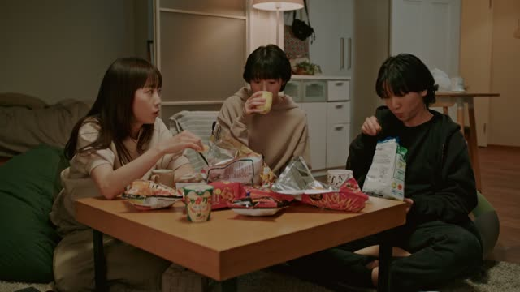

～方 (How to)

Oishinbo · Episode 16
味噌汁の作り方ですが…
"As for how to make miso soup..."
Verb ます-stem + 方 (かた) means "the way of doing, how to": 作ります → 作り方 (how to make), 使い方 (how to use). The result is a noun.
On this card, Yamaoka starts explaining the basics of Japanese cooking. ですが makes it polite.
The object takes の, not を: 味噌汁の作り方.

Shirokuma Cafe · Episode 4
それ、スマフォの使い方じゃないけどね。
"That's not how you use a smartphone, though."
On this card, Penguin balances a phone on his head. スマフォの使い方: the way to use a phone.
Quick Examples
At a station.
切符の買い方を教えてください。
"Please show me how to buy a ticket."
PoliteYour friend learns kanji.
この漢字の読み方、分かる？
"Do you know how to read this kanji?"
CasualA cooking class.
おいしいご飯の炊き方を習いました。
"I learned how to cook good rice."
PoliteYour friend is rude.
その言い方はないでしょ。
"That's no way to say it."
言い方 = the way you say something.
CasualWith and without
作ってください。
"Please make it."
作り方を教えてください。
"Please tell me how to make it."
Examples from Media
Oishinbo · Episode 10
遠洋漁業の漁師たちが始めた食べ方なんです。
"It's a way of eating it that deep-sea fishermen started."
Death Note · Episode 20
私は私のやり方で捜査していきます。
"I'll investigate my own way."
Goblin Slayer · Episode 6
事実だからこそ、言い方が大事なんです！
"Because it's the truth, how you say it matters!"
1 Litre of Tears · Episode 3
十分自分の生き方を考えられる年です。
"She's old enough to think about how to live her life."
Dungeon Meshi · Episode 2
そもそも、そのやり方、効率悪すぎないか？
"Isn't that way way too slow anyway?"
Kekkon Dekinai Otoko · Episode 3
一番ステキな金の使い方だと思うんだよな。
"I think it's the nicest way to spend money."
Aggretsuko · Season 1, Episode 1
正直、この歩き方、超腰に来るんだけど。
"Honestly, walking like this kills my back."

Brush Up Life · Episode 5
呼び方、統一しない？
"Shouldn't we agree on what to call her?"